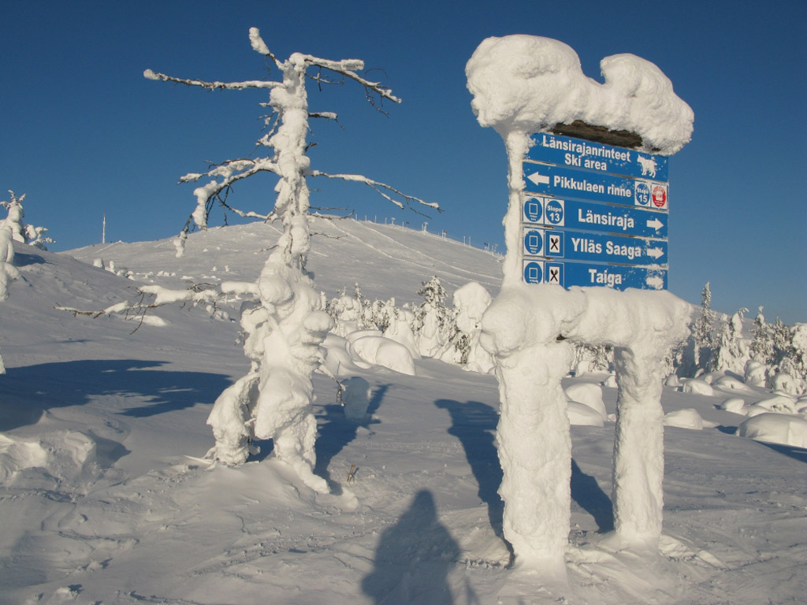
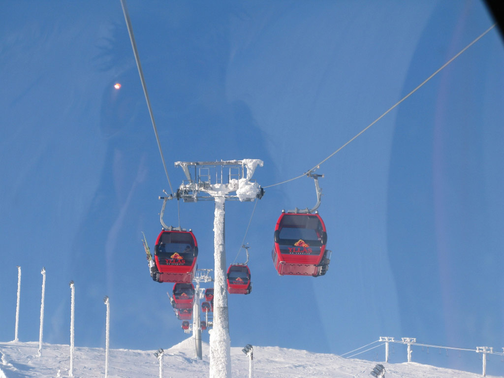
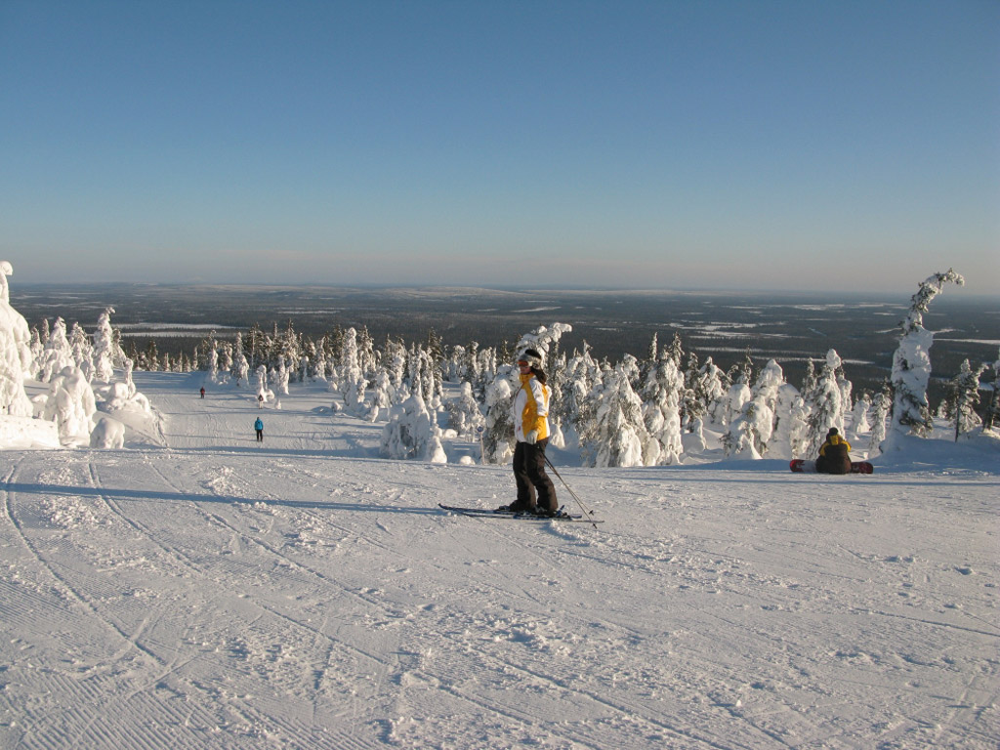
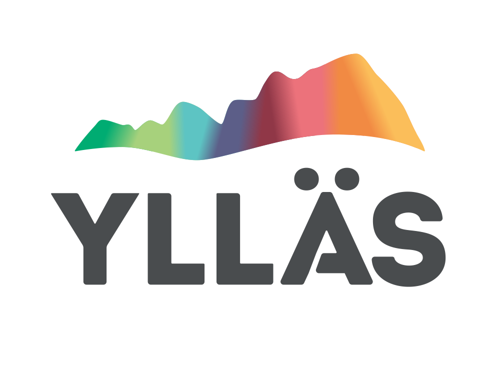
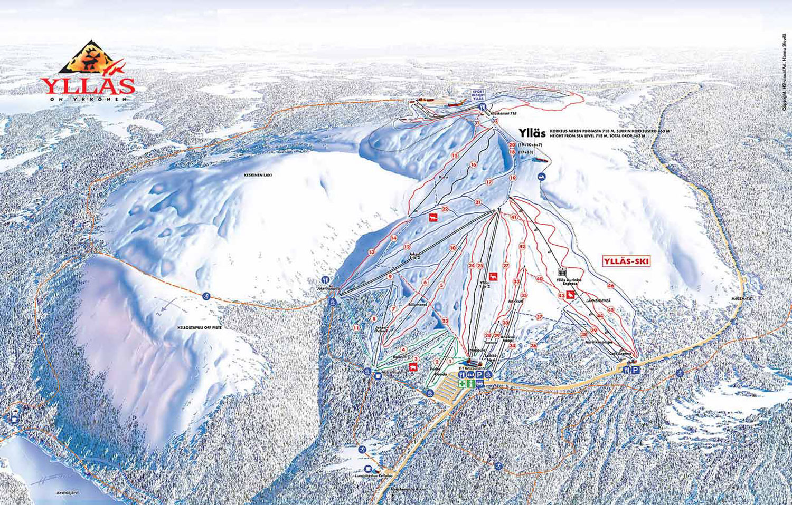
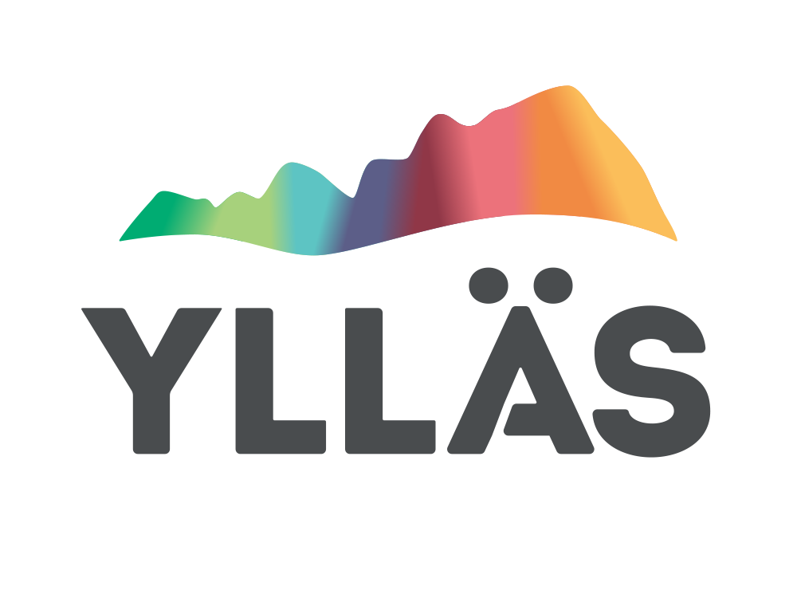

De Ylläs heeft een hoogte van 718 m
Skiën op een berg met de standaard pistes, langlaufen of cross country skiën? In lapland in het mooie
Äkäslompolokan het allemaal. 52km aan pistes en 300km aan langlaufnetwerk, waarom de auto nemen als je
naar je bestemming kan langlaufen.
Ter plaatse kan je ook een kaart verkrijgen voor €10 zodat je je route kan uitplannen en je
kilometersberekenen. Voor meer info kan je onderstaande link volgen naar de website van Ylläs.


